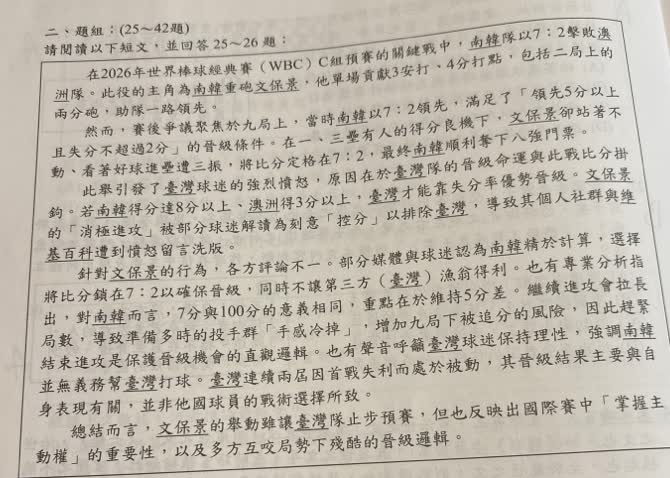
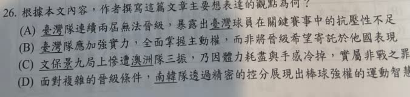

分享原卷｜第26題
完整原題
作答所需文章／材料
在2026年世界棒球經典賽（WBC）C組預賽的關鍵戰中，南韓隊以7：2擊敗澳洲隊。此役的主角為南韓重砲文保景，他單場貢獻3安打、4分打點，包括二局上的兩分砲，助隊一路領先。 然而，賽後爭議聚焦於九局上，當時南韓以7：2領先，滿足了「領先5分以上且失分不超過2分」的晉級條件。在一、三壘有人的得分良機下，文保景卻站著不動，看著好球進壘遭三振，將比分定格在7：2。最終南韓順利拿下八強門票。 此舉引發了臺灣球迷的強烈憤怒，原因在於臺灣隊的晉級命運與此戰比分掛鉤。若南韓得分達8分以上、澳洲得3分以上，臺灣才能靠失分率優勢晉級。文保景的「消極進攻」被部分球迷解讀為刻意「控分」以排除臺灣，導致其個人社群與維基百科遭到憤怒留言洗版。 針對文保景的行為，各方評論不一。部分媒體與球迷認為南韓精於計算，選擇讓比分鎖在7：2以確保晉級，同時不讓第三方（臺灣）漁翁得利。也有專業分析指出，對南韓而言，7分與100分的意義相同，重點在於維持5分差。繼續進攻會拉長局數，導致準備多時的投手群「手感冷掉」，增加九局下被追分的風險，因此趕緊結束進攻是保護晉級機會的直觀選擇。也有聲音呼籲臺灣球迷保持理性，強調南韓並無義務幫臺灣打球。臺灣連續兩屆因首戰失利而處於被動，其晉級結果主要與自身表現有關，並非他國球員的戰術選擇所致。 總結而言，文保景的舉動雖讓臺灣隊止步預賽，但也反映出國際賽中「掌握主動權」的重要性，以及多方互咬局勢下殘酷的晉級邏輯。根據本文內容，作者撰寫這篇文章主要想表達的觀點為何？
(A) 臺灣隊連續兩屆無法晉級，暴露出臺灣球員在關鍵賽事中的抗壓性不足
(B) 臺灣隊應加強實力，全面掌握主動權，而非將晉級希望寄託於他國表現
(C) 文保景九局上慘遭澳洲隊三振，乃因體力耗盡與手感冷掉，實屬非戰之罪
(D) 面對複雜的晉級條件，南韓隊透過精密的控分展現出棒球強權的運動智慧
先想一想，再查看答案、解說與原圖
原卷作答：A；紅筆訂正B
正確答案：(B) 臺灣隊應加強實力，全面掌握主動權，而非將晉級希望寄託於他國表現。
逐項解析
| 選項與原句 | 判讀 | 句意與判斷理由 |
|---|---|---|
| (A) 臺灣隊連續兩屆無法晉級，暴露出臺灣球員在關鍵賽事中的抗壓性不足 | 不選 | 文中強調首戰與主動權，未以球員抗壓不足作核心診斷。 |
| (B) 臺灣隊應加強實力，全面掌握主動權，而非將晉級希望寄託於他國表現 | 應選 | 末段直接點出掌握主動權，前文也提醒關注自身表現，最能統整全文。 |
| (C) 文保景九局上慘遭澳洲隊三振，乃因體力耗盡與手感冷掉，實屬非戰之罪 | 不選 | 文中沒有文保景因體能耗盡遭三振的證據；投手手感的討論不能轉套給打者。 |
| (D) 面對複雜的晉級條件，南韓隊透過精密的控分展現出棒球強權的運動智慧 | 不選 | 這只取部分人的控分解讀，沒有涵蓋作者對臺灣應自我檢討的主張。 |
詳細說明與解題步驟
主旨題要看全文收束，而非只抓最有爭議的事件。第四段提到自身表現，最後一段強調掌握主動權，B最能統整全文。A添加抗壓性診斷；C把投手手感討論移給打者；D只取局部球迷控分解讀。
原AI把「對戰優質率TQB」與這次賽制的失分比率混用，已訂正：此處相關排名比較為同戰績球隊對戰的失分除以防守出局數，不能直接換成得失分差或TQB。原文條件仍照卷保留，閱讀題據本文選答；不能把「兩隊各達8、3分」抽離戰績與出局數，當作任何比賽都適用的晉級公式。
文中「控分排除臺灣」屬部分球迷的解讀，「手感冷掉」則是文中提出的戰術分析。不能把兩者當成已證實的球員內心動機或必然生理結果；解讀為已熱身投手等待太久可能影響節奏即可，不照抄原AI無根據的神經反射、腎上腺素等推論。
核對：[WBC官方2026賽事規則](https://www.mlb.com/amp/news/world-baseball-classic-rules-rule-modifications-2026.html)；[官方賽況](https://www.mlb.com/stories/game/788112)。
核對註記：依原卷或完整來源文字核對，必要材料完整保留；教材課次未確認，歸綜合。
原圖（僅本題）

